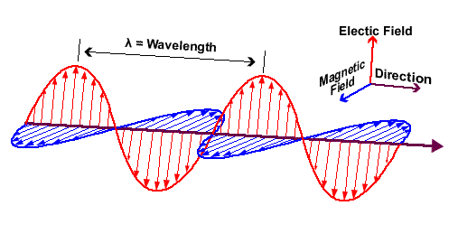
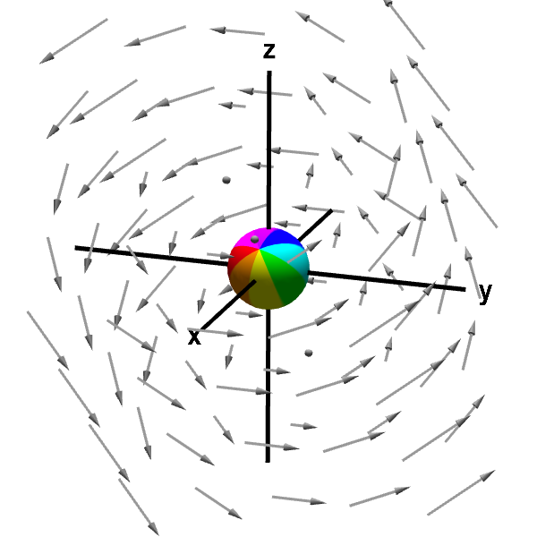

Maxwell's Equations
Electromagnetism and Maxwell
Electricity and magnetism were combined by Maxwell. The theory of electromagnetism states that all
types of electromagnetic waves travel as seen below (figure 2.1), with the electric field, magnetic
field, and direction of travel at right angles to one another

There are 4 equations that Maxwell made come together to form Maxwell’s Equations: Gauss'
Law for Electric Fields describes the behaviour of an electric field, Gauss' Law for Magnetism
describes the magnetic field and how a magnetic monopole cannot exist, Faraday's Law tells us
to what extent a changing a magnetic field creates an electric field - this joins electricity
and magnetism together, and Ampere's Law shows to what extent current can be induced by a moving
magnet or that a magnetic field can be induced by a current. These equations, for vacuums are
shown mathematically below in figure 2.2. (Nave, 1999)
| [1] | $ \nabla \cdot D = p_v $ | Gauss’ Law for Electric Fields – This dictates how the electric field behaves around electric charges. |
| [2] | $ \nabla \cdot B = 0 $. | Gauss’ Law for Magnetism – This states a magnetic field, B, has a divergence of zero. |
| [3] | $ \nabla \times E = -\frac{\partial B}{\partial t} $ | Faraday’s Law of Induction – This predicts how a magnetic field will interact with an electric circuit to produce and EMF. |
| [4] | $ \nabla \times H = \frac{\partial B}{\partial t} + J $. | Ampere’s Law – This relates the integrated magnetic field around a closed loop to the electric current passing through the loop. Shows how a magnetic or electric field can be induced. |
Induction, as mentioned above, is the production of an electromotive force (e.m.f.) across a conductor
due to its interaction with a magnetic field. This could be something as simple as moving a permanent
magnet through a coil of wire, which would produce a current. Lenz’s Law states that the e.m.f. that
is induced will oppose the current causing it. Mathematically this relationship is directly proportional.
$ \epsilon \propto -\frac{dI}{dt} $, where $\epsilon$ is the induced e.m.f. in a coil or inductor, and the negative
shows $\epsilon$ is in the opposite direction to $\frac{dI}{dt}$
Divergence
One of the most important concepts in Maxwell’s equations is divergence (equations [1] and [2]). Divergence,
at a point $(x,y,z)$ is the measure of the vector flow out of a surface surrounding that point. If something
is flowing out of a point then the divergence is taken as positive, if divergence is negative then something
is flowing into a point.
The image below shows positive divergence from a point.

Take a vector function $A$ as defined below:
$A = \begin{bmatrix}A_x \\ A_y \\ A_z\end{bmatrix} = A_x\underline{i} + A_y\underline{j} +
A_z\underline{k} = A_x\begin{bmatrix}1 \\0 \\0 \end{bmatrix} + A_y\begin{bmatrix}0 \\1 \\0 \end{bmatrix} +
A_z\begin{bmatrix}0 \\ 0 \\1 \end{bmatrix}$
Since divergence is a measure of how fast the vector field is changing in the x, y, and z directions,
then the divergence of A is how fast the vector function is changing, so:
$\nabla \cdot A = \frac{\partial A_x}{\partial x} + \frac{\partial A_y}{\partial y} +
\frac{\partial A_z}{\partial z}$
Where$ \frac{\partial}{\partial x}$ is the symbol for a
partial derivative with respect to $x$, and $\nabla \cdot$ is the divergence.
There is a good visualisation of this
here
Curl
Another vector function that is used in equations [3] and [4] is curl (symbol $\nabla \times$). The curl is the
measure of three-dimensional rotation of a vector field. At every point in the vector field, the curl of that
point is represented as a vector.

Take $A$ as defined above. Then the curl of $A$ is defined as:
$\nabla \times A = (\frac{\partial A_z}{\partial y} - \frac{\partial A_y}{\partial z})\underline{i} +
(\frac{\partial A_x}{\partial z} - \frac{\partial A_z}{\partial x})\underline{j} +
(\frac{\partial A_y}{\partial x} - \frac{\partial A_x}{\partial y})\underline{k}$
$ = \begin{bmatrix}(\frac{\partial A_z}{\partial y} - \frac{\partial A_y}{\partial z})
\\(\frac{\partial A_x}{\partial z} - \frac{\partial A_z}{\partial x})
\\(\frac{\partial A_y}{\partial x} - \frac{\partial A_x}{\partial y})\end{bmatrix}$
$\frac{\partial A_z}{\partial y}$ is the rate of change of $A$ in the $z$ direction with respect to $y$
There is a good visualisation of this idea
here
References
Math.harvard.edu. (2009). Curl and Divergence. [online] Available at:
http://www.math.harvard.edu/archive/21a_spring_09/PDF/13-05-curl-and-divergence.pdf
[Accessed 3 Mar. 2018].
Nave, R. (1999). Maxwell's Equations. [online] Hyperphysics.phy-astr.gsu.edu. Available at:
http://hyperphysics.phy-astr.gsu.edu/hbase/electric/maxeq.html [Accessed 6 Mar. 2018].
figure 2.1 - Quora. (2017). Electromagnetic Waves. [online] Available at:
https://qph.ec.quoracdn.net/main-qimg-1555beff02d8ebef0dd25bed865db8bf
[Accessed 3 Mar. 2018].
figure 2.4 - Mathinsight.org. (n.d.). The idea of the divergence of a vector field - Math Insight.
[online] Available at:
https://mathinsight.org/divergence_idea [Accessed 5 Mar. 2018].
figure 2.5 - Mathinsight.org. (n.d.). The idea of the curl of a vector field - Math Insight.
[online] Available at:
https://mathinsight.org/curl_idea [Accessed 5 Mar. 2018].